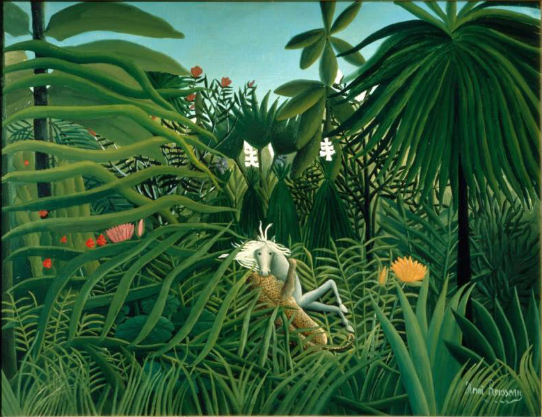

<head>
<meta charset="UTF-8" />
<meta name="keywords" content="drawing, painting" />
<meta name="description" content="drawings by Sunjy" />
<title>Sunjy</title>
<link rel="shortcut icon" type="image/x-icon" href="../../mImages/mCommon/favicon.ico" media="screen" />
<link rel="stylesheet" type="text/css" href="../../mCsses/mCommon/mCssA.css" />
<link rel="stylesheet" type="text/css" href="../../mCsses/mCommon/mCssB.css" />
<link rel="stylesheet" type="text/css" href="../../mCsses/mCommon/mCssC.css" />
<link rel="stylesheet" type="text/css" href="../../mCsses/mCommon/mCssD.css" />
<link rel="stylesheet" type="text/css" href="../../mCsses/mContent/mCssA.css" />
<link rel="stylesheet" type="text/css" href="../../mCsses/mContent/mCssB.css" />
<link rel="stylesheet" type="text/css" href="../../mCsses/mContent/mCssC.css" />
<link rel="stylesheet" type="text/css" href="../../mCsses/mContent/mCssD.css" />
</head>
<script type="text/javascript" src="../../mScripts/mContent/mContentAA.js" /></script>
<script type="text/javascript" src="../../mScripts/mContent/mContentAB.js" /></script>
<script type="text/javascript" src="../../mScripts/mContent/mContentAC.js" /></script>
<script type="text/javascript" src="../../mScripts/mContent/mContentAD.js" /></script>
<script type="text/javascript"></script> 
<script type="text/javascript">
document.write('<div class="mImgAbsolute"></div>');
/*
document.write('<p class="mFontSizeBColor" />From a white paper...</p>');
document.write('<table class="center"><tr><td>');
document.write('');
document.write('</td></tr></table>');
*/
</script>


<script type="text/javascript">
document.write('<p class="mFontSizeBColor" />Horse Attacked by a Jaguar</p>');
document.write('<p class="mFontSizeSColor" />“Horse Attacked by a Jaguar” by Henri Rousseau is jungle paintings depicting a Jaguar attacking a white horse painted with meticulous care. The horse stares transfixed in a strange contrast of white against lush green.<br><br>Rousseau’s fantastic scenes heralded Surrealism and were built up meticulously in layers, using a large number of green shades to capture the lush abundance of the jungle.<br><br>Rousseau’s work continued to be derided by the critics even after his death in 1910. Eventually, Henri Rousseau won a following among Picasso, Matisse, and Toulouse-Lautrec, who all became admirers of his work.<br></p>');
document.write('<table class="center" /><tr><td>');
document.write('<br>Rousseau’s fantastic scenes heralded Surrealism and were built up meticulously in layers, using a large number of green shades to capture the lush abundance of the jungle.<br><br>Rousseau’s work continued to be derided by the critics even after his death in 1910. Eventually, Henri Rousseau won a following among Picasso, Matisse, and Toulouse-Lautrec, who all became admirers of his work.<br>" />');
document.write('</td></tr></table>');
</script>


